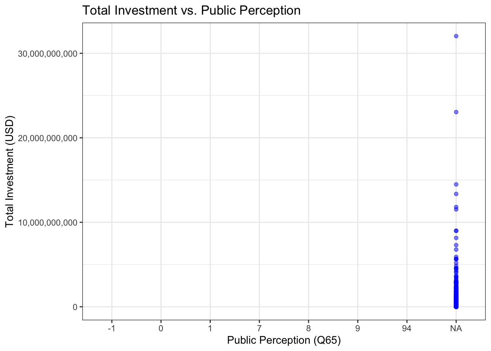

Attaching package: 'data.table'
The following objects are masked from 'package:lubridate':
hour, isoweek, mday, minute, month, quarter, second, wday, week,
yday, year
The following objects are masked from 'package:dplyr':
between, first, last
The following object is masked from 'package:purrr':
transpose
library(arrow)
Attaching package: 'arrow'
The following object is masked from 'package:lubridate':
duration
The following object is masked from 'package:utils':
timestamp
library(ggplot2)library(knitr)library(scales)
Attaching package: 'scales'
The following object is masked from 'package:purrr':
discard
The following object is masked from 'package:readr':
col_factor
Introduction
The rise of Chinese engagement in Africa has been hypervisible on the world stage and a point of contention for scholars looking at measures of impact and dependency within these countries. Two dominant schools of thought emerge as the framework through which this engagement is interpreted—those who view Chinese investment as a neo-colonial form of extractivism and those who see it as a mutually beneficial South-South partnership offering an alternative to Western conditional aid. As China and the US continue to compete for economic and geopolitical influence, African nations find themselves positioned in the center of the global tug of war, leveraging partnerships for developmental gain and wrestling with concerns of debt sustainability, democracy, and resource control. Prevailing narratives from the West would have it that Chinese investments are deleterious to democratic norms and governance structures in Africa, often portraying them as enabling authoritarian regimes, exacerbating corruption, and undermining transparency. The broader complexity of this debate is reflected in the differing stances of African politicians, with some embracing Chinese investment as a necessary catalyst for development, while others express concerns over debt dependency and governance implications. However, one crucial perspective that remains underexplored in the literature is that of African people themselves. This paper aims to foreground African perspectives in this ongoing debate. Moving beyond state-centric and Western-dominated narratives, this analysis seeks to highlight how Africans themselves interpret, navigate, and respond to Chinese engagement—whether as an opportunity for economic transformation, a source of new dependencies, or something more nuanced.
Existing studies, such as Linda Benabdallah Going Beyond Binary Narratives of China–Africa Relations, examine the nature of Chinese investments within Africa from the macro perspective, while research by Hulby, Li, and Springman explores how geopolitical competition shapes perceptions of aid and investment. Building on these works, this study challenges the assumption that growing geopolitical competition fundamentally reshapes African nations’ preferences for aid from either China or the West. Instead, it posits that–at least in the eyes of citizens– geopolitical competition has neutral effects on the ways in which they view aid—especially given that these external pressures have long since informed the African nations engagement with global powers.
Using AidData’s Global Chinese Development Finance dataset and select questions from Round 9 of the Afrobarometer surveys, I will examine African citizens’ perceptions in relation to the amount of investment their countries receive. Specifically, I will use Question Q64c—“Do you think our government has borrowed too much money from China, or haven’t you heard enough to say?”—as a proxy for public awareness and attitudes toward Chinese development finance. This variable captures whether respondents believe their government has borrowed excessively from China, with value labels indicating ‘Yes’ (1), ‘No’ (0), ‘Not applicable’ (7), ‘Refused’ (8), ‘Don’t know’ (9), and ‘Missing’ (-1). It offers a useful lens to assess how perceptions may or may not align with actual financial inflows captured in the AidData dataset.
To examine potential causal relationships between Chinese investment and citizens’ perceptions of their government’s borrowing behavior, I will treat the amount of Chinese development finance received by a country—as recorded in AidData’s Global Chinese Development Finance dataset—as the independent variable. I will analyze whether higher levels of Chinese investment correlate with a greater likelihood of respondents answering “yes” to Afrobarometer Question Q64c, indicating a belief that their government has borrowed too much from China. This variable will act as a proxy for examining the level of exposure individuals have to aid from China, with the assumption being that they would only have a formed opinion if they have directly or indirectly observed the impacts of Chinese investment—such as infrastructure projects, job creation, or media coverage—in their communities.
While observational data limits causal inference, I will strengthen causal claims by incorporating statistical controls for key confounding variables. In particular, I will control the education level, as more educated individuals may be more aware of international financial flows and more likely to form opinions about government borrowing. By comparing responses across different education groups, I aim to assess whether perceptions vary systematically with both investment exposure and individual-level characteristics, thereby helping to isolate the effect of Chinese investment on public opinion.
Data: Afrobarometer + AidData V3
Afrobarometer Merged Data 8: Includes a range of 40 African countries
Q65A Question: To your knowledge, does China give loans or development assistance to our country’s government, or haven’t you had a chance to hear about this? Variable Label: Q65a. Country receives loans or development assistance from China Values: 0, 1, 8, 9, -1 Value Labels: 0=No, 1=Yes, 8=Refused, 9=Don’t know, -1=Missing. Source: Afrobarometer Round 8
Question Number: Q65B Question: Do you think that our government is required to repay China for the loans and development assistance it provides to [Botswana], or haven’t you heard enough to say? Variable Label: Q65b. Government required to repay China for loans. Values: 0, 1, 7, 8, 9, -1 Value Labels: 0=No, 1=Yes, 7=Not applicable, 8=Refused, 9=Don’t know, -1=Missing. Source: Afrobarometer Round 8 Note: Interviewer was instructed that if the response to Q65A was 0=No or 9=DK they should select code 7=Not applicable.
Question Number: Q65C Question: Do you think our government has borrowed too much money from China, or haven’t you heard enough to say? Variable Label: Q64c. Government borrowed too much money from China Values: 0, 1, 7, 8, 9, -1 Value Labels: 0=No, 1=Yes, 7=Not applicable, 8=Refused, 9=Don’t know, -1=Missing. Source: Afrobarometer Round 8 Note: Interviewer was instructed that if the response to Q65A was 0=No or 9=DK they should select code 7=Not applicable.
Question Number: Q65D Question: When the government of China gives loans or development assistance to [Botswana], do you think they put more requirements or fewer requirements on our government compared to other donor countries, or haven’t you heard enough to say? Variable Label: Q65d. Requirements on loans and assistance from China. Values: 0-4, 7, 8, 9, -1 Value Labels: 0=Far fewer requirements, 1=Somewhat fewer requirements, 2=About the same number of requirements, 3=Somewhat more requirements, 4=Many more requirements, 7=Not applicable, 8=Refused, 9=Don’t know, -1=Missing. Source: Afrobarometer Round 8 Note: Interviewer probed for strength of opinion.
Question Number: Q69A Question: In your opinion, which of the following countries, if any, would be the best model for the future development of our country, or is there some other country in Africa or elsewhere, that should be our model? Variable Label: Q69a. Best model for the future development Values: 0-7, 8, 9, 180, 300-302, 340, 380-382, 460, 500-501, 620, 660, 860-861, 900-903, 1100-1102, 1140-1142, 1220-1222, 1260, 1300-1301, 1500-1501, 1540, 1580-1581, 1620-1621, 1700-1701, 1740-1743, 1750-1751, -1 Value Labels: 0=None of these, 1=United States, 2=China, 3=Former colonial power, i.e Britain, France, or Portugal, 5=South Africa, 6=Ethiopia, 7=We should follow our own country’s model, 8=Refused, 9=Don’t know, 180=Ghana, 300=Rwanda, 301=Singapore, 302=Tanzania, 340=Botswana, 380=Ghana, 381=Japan, 382=Nigeria, 460=Zambia, 500=Cote d’Ivoire, 501=Arabie Saoudite, 620=KSA, 660=Rwanda, 860=Zambia, 861=Botswana, 900=Singapour, 901=Inde, 902=France, 903=Canada, 1100=Nigeria, 1101=Libye, 1102=Arabie Saoudite, 1140=Ghana, 1141=Allemagne, 1142=Benin, 1220=Rwanda, 1221=Nigeria, 1222=Canada, 1260=Japan, 1300=Senegal, 1301=Ivory Coast, 1500=Germany, 1501=Turkey, 1540=Saudi Arabia, 1580=Turkey, 1581=Germany, 1620=Mozambique, 1621=Lesotho, 1700=RWANDA, 1701=GUINÉE ÉQUATORIALE, 1740=Singapore, 1741=Senegal, 1742=Rwanda, 1743=United Arab Emirates, 1750=France, 1751=Brazil, -1=Missing. Source: Afrobarometer Round 8
Question Number: Q69B Question: How much influence do you think China’s economic activities in [Botswana] have on our economy, or haven’t you heard enough to say? Variable Label: Q69b. Influence of China on Country Values: 0-3, 8, 9, -1 Value Labels: 0=None, 1=A little, 2=Some, 3=A lot, 8=Refused, 9=Don’t know, -1=Missing. Source: Afrobarometer Round 8
** Note that I am currently experiencing issues with graphing necessary information so have chosen to omit this from this update.
Warning: Expecting logical in CF1074 / R1074C84: got 'Yes'
Warning: Expecting logical in CF2207 / R2207C84: got 'Yes'
Warning: Expecting logical in CL2354 / R2354C90: got 'Yes'
Warning: Expecting logical in CL2355 / R2355C90: got 'Yes'
Warning: Expecting numeric in C3425 / R3425C3: got '592|2755'
Warning: Expecting numeric in C3702 / R3702C3: got '740|884'
Warning: Expecting numeric in C3732 / R3732C3: got '882|425'
Warning: Expecting logical in CF3757 / R3757C84: got 'Yes'
Warning: Expecting numeric in C3848 / R3848C3: got '597|2330'
Warning: Expecting logical in CL3882 / R3882C90: got 'Yes'
Warning: Expecting logical in CL3987 / R3987C90: got 'Yes'
Warning: Expecting logical in CF4022 / R4022C84: got 'Yes'
Warning: Expecting logical in CL4054 / R4054C90: got 'Yes'
Warning: Expecting logical in CL4055 / R4055C90: got 'Yes'
Warning: Expecting logical in CF4138 / R4138C84: got 'Yes'
Warning: Expecting numeric in C4398 / R4398C3: got '903|2626'
Warning: Expecting logical in CF4530 / R4530C84: got 'Yes'
Warning: Expecting numeric in C4615 / R4615C3: got '641|1295'
Warning: Expecting numeric in C4690 / R4690C3: got '800|938'
Warning: Expecting numeric in C4892 / R4892C3: got '20|515'
Warning: Expecting numeric in C5010 / R5010C3: got '838|1535'
Warning: Expecting numeric in C5160 / R5160C3: got '620|1871'
Warning: Expecting logical in CF5205 / R5205C84: got 'Yes'
Warning: Expecting numeric in C5214 / R5214C3: got '465|904'
Warning: Expecting numeric in C5267 / R5267C3: got '780|954'
Warning: Expecting logical in CF5267 / R5267C84: got 'Yes'
Warning: Expecting numeric in C5317 / R5317C3: got '713|935'
Warning: Expecting numeric in C5336 / R5336C3: got '857|1399'
Warning: Expecting numeric in C5359 / R5359C3: got '597|2746'
Warning: Expecting numeric in C5360 / R5360C3: got '597|2747'
Warning: Expecting numeric in C5367 / R5367C3: got '597|2746'
Warning: Expecting numeric in C5368 / R5368C3: got '597|2747'
Warning: Expecting logical in CF5375 / R5375C84: got 'Yes'
Warning: Expecting logical in CF5390 / R5390C84: got 'Yes'
Warning: Expecting logical in CF5435 / R5435C84: got 'Yes'
Warning: Expecting numeric in C5514 / R5514C3: got '694|2341'
Warning: Expecting numeric in C5572 / R5572C3: got '566|2128'
Warning: Expecting logical in CF5633 / R5633C84: got 'Yes'
Warning: Expecting logical in CL5640 / R5640C90: got 'Yes'
Warning: Expecting logical in CL5641 / R5641C90: got 'Yes'
Warning: Expecting logical in CL5642 / R5642C90: got 'Yes'
Warning: Expecting logical in CL5643 / R5643C90: got 'Yes'
Warning: Expecting logical in CL5644 / R5644C90: got 'Yes'
Warning: Expecting logical in CL5645 / R5645C90: got 'Yes'
Warning: Expecting logical in CL5646 / R5646C90: got 'Yes'
Warning: Expecting numeric in C5695 / R5695C3: got '698|1274'
Warning: Expecting logical in CF5806 / R5806C84: got 'Yes'
Warning: Expecting numeric in C5829 / R5829C3: got '422|644'
Warning: Expecting numeric in C5830 / R5830C3: got '422|644'
Warning: Expecting logical in CF6078 / R6078C84: got 'Yes'
Warning: Expecting logical in CF6247 / R6247C84: got 'Yes'
Warning: Expecting logical in CF6255 / R6255C84: got 'Yes'
Warning: Expecting numeric in C6373 / R6373C3: got '641|1295'
Warning: Expecting logical in CL6408 / R6408C90: got 'Yes'
Warning: Expecting logical in CL6445 / R6445C90: got 'Yes'
Warning: Expecting logical in CL6476 / R6476C90: got 'Yes'
Warning: Expecting numeric in C6815 / R6815C3: got '8|2011'
Warning: Expecting numeric in C6857 / R6857C3: got '636|1381'
Warning: Expecting numeric in C6914 / R6914C3: got '528|974'
Warning: Expecting numeric in C6937 / R6937C3: got '479|969'
Warning: Expecting numeric in C7244 / R7244C3: got '702|939'
Warning: Expecting numeric in C7263 / R7263C3: got '742|925'
Warning: Expecting logical in CF7331 / R7331C84: got 'Yes'
Warning: Expecting logical in CL7367 / R7367C90: got 'Yes'
Warning: Expecting logical in CL7368 / R7368C90: got 'Yes'
Warning: Expecting logical in CL7369 / R7369C90: got 'Yes'
Warning: Expecting logical in CF7458 / R7458C84: got 'Yes'
Warning: Expecting numeric in C7465 / R7465C3: got '839|2452'
Warning: Expecting logical in CF7576 / R7576C84: got 'Yes'
Warning: Expecting logical in CL7671 / R7671C90: got 'Yes'
Warning: Expecting logical in CL7672 / R7672C90: got 'Yes'
Warning: Expecting logical in CL7688 / R7688C90: got 'Yes'
Warning: Expecting logical in CF7866 / R7866C84: got 'Yes'
Warning: Expecting logical in CF7871 / R7871C84: got 'Yes'
Warning: Expecting logical in CF7906 / R7906C84: got 'Yes'
Warning: Expecting numeric in C7942 / R7942C3: got '641|1295'
Warning: Expecting numeric in C7947 / R7947C3: got '641|1295'
Warning: Expecting numeric in C8273 / R8273C3: got '758|944'
Warning: Expecting logical in CL8342 / R8342C90: got 'Yes'
Warning: Expecting logical in CF8376 / R8376C84: got 'Yes'
Warning: Expecting logical in CF8380 / R8380C84: got 'Yes'
Warning: Expecting numeric in C8448 / R8448C3: got '636|1381'
Warning: Expecting logical in CF8448 / R8448C84: got 'Yes'
Warning: Expecting numeric in C8476 / R8476C3: got '2164|620'
Warning: Expecting numeric in C8477 / R8477C3: got '2164|620'
Warning: Expecting numeric in C8501 / R8501C3: got '917|434'
Warning: Expecting numeric in C8506 / R8506C3: got '524|917|434'
Warning: Expecting logical in CL8630 / R8630C90: got 'Yes'
Warning: Expecting logical in CL8662 / R8662C90: got 'Yes'
Warning: Expecting logical in CF8665 / R8665C84: got 'Yes'
Warning: Expecting logical in CF8773 / R8773C84: got 'Yes'
Warning: Expecting logical in CF8814 / R8814C84: got 'Yes'
Warning: Expecting logical in CL8818 / R8818C90: got 'Yes'
Warning: Expecting logical in CF8834 / R8834C84: got 'Yes'
Warning: Expecting logical in CF8838 / R8838C84: got 'Yes'
Warning: Expecting numeric in C8917 / R8917C3: got '839|2452'
Warning: Expecting logical in CF8970 / R8970C84: got 'Yes'
Warning: Expecting logical in CL9090 / R9090C90: got 'Yes'
Warning: Expecting numeric in C9095 / R9095C3: got '631|970'
Warning: Expecting numeric in C9164 / R9164C3: got '755|967'
Warning: Expecting numeric in C9269 / R9269C3: got '869|1982'
Warning: Expecting numeric in C9440 / R9440C3: got '797|812'
Warning: Expecting numeric in C9533 / R9533C3: got '809|1313'
Warning: Expecting logical in CL9601 / R9601C90: got 'Yes'
Warning: Expecting logical in CL9605 / R9605C90: got 'Yes'
Warning: Expecting numeric in C9698 / R9698C3: got '905|427'
Warning: Expecting logical in CF9730 / R9730C84: got 'Yes'
Warning: Expecting numeric in C9741 / R9741C3: got '2161|620'
Warning: Expecting numeric in C9742 / R9742C3: got '501|620'
Warning: Expecting numeric in C9745 / R9745C3: got '2162|620'
Warning: Expecting numeric in C9751 / R9751C3: got '2163|620'
Warning: Expecting numeric in C9754 / R9754C3: got '2163|620'
Warning: Expecting numeric in C9759 / R9759C3: got '501|620'
Warning: Expecting numeric in C9760 / R9760C3: got '2161|620'
Warning: Expecting numeric in C9761 / R9761C3: got '2162|620'
Warning: Expecting numeric in C9841 / R9841C3: got '615|1371'
Warning: Expecting numeric in C9842 / R9842C3: got '615|1371'
Warning: Expecting logical in CF9851 / R9851C84: got 'Yes'
Warning: Expecting logical in CF10016 / R10016C84: got 'Yes'
Warning: Expecting numeric in C10046 / R10046C3: got '566|2129'
Warning: Expecting logical in CF10053 / R10053C84: got 'Yes'
Warning: Expecting numeric in C10075 / R10075C3: got '669|943'
Warning: Expecting logical in CF10117 / R10117C84: got 'Yes'
Warning: Expecting logical in CF10129 / R10129C84: got 'Yes'
Warning: Expecting logical in CF10130 / R10130C84: got 'Yes'
Warning: Expecting numeric in C10184 / R10184C3: got '839|2452'
Warning: Expecting logical in CL10230 / R10230C90: got 'Yes'
Warning: Expecting logical in CF10232 / R10232C84: got 'Yes'
Warning: Expecting logical in CF10455 / R10455C84: got 'Yes'
Warning: Expecting numeric in C10586 / R10586C3: got '708|1146'
Warning: Expecting numeric in C10588 / R10588C3: got '708|1146'
Warning: Expecting numeric in C10589 / R10589C3: got '708|1146'
Warning: Expecting numeric in C10590 / R10590C3: got '708|1146'
Warning: Expecting numeric in C10593 / R10593C3: got '94|964'
Warning: Expecting logical in CF10637 / R10637C84: got 'Yes'
Warning: Expecting logical in CF10644 / R10644C84: got 'Yes'
Warning: Expecting numeric in C10665 / R10665C3: got '797|812|807'
Warning: Expecting logical in CF10761 / R10761C84: got 'Yes'
Warning: Expecting logical in CF10807 / R10807C84: got 'Yes'
Warning: Expecting logical in CF10811 / R10811C84: got 'Yes'
Warning: Expecting logical in CF10831 / R10831C84: got 'Yes'
Warning: Expecting logical in CF10875 / R10875C84: got 'Yes'
Warning: Expecting logical in CF10884 / R10884C84: got 'Yes'
Warning: Expecting numeric in C10931 / R10931C3: got '842|1229'
Warning: Expecting logical in CL10963 / R10963C90: got 'Yes'
Warning: Expecting numeric in C11026 / R11026C3: got '797|812'
Warning: Expecting logical in CF11038 / R11038C84: got 'Yes'
Warning: Expecting logical in CL11045 / R11045C90: got 'Yes'
Warning: Expecting logical in CL11056 / R11056C90: got 'Yes'
Warning: Expecting logical in CF11129 / R11129C84: got 'Yes'
Warning: Expecting logical in CF11142 / R11142C84: got 'Yes'
Warning: Expecting logical in CF11170 / R11170C84: got 'Yes'
Warning: Expecting numeric in C11179 / R11179C3: got '451|819'
Warning: Expecting numeric in C11182 / R11182C3: got '1830|819'
Warning: Expecting numeric in C11183 / R11183C3: got '1830|819'
Warning: Expecting numeric in C11186 / R11186C3: got '1122|819'
Warning: Expecting numeric in C11190 / R11190C3: got '1122|819'
Warning: Expecting numeric in C11191 / R11191C3: got '797|812|819'
Warning: Expecting numeric in C11192 / R11192C3: got '451|819'
Warning: Expecting logical in CF11204 / R11204C84: got 'Yes'
Warning: Expecting logical in CF11241 / R11241C84: got 'Yes'
Warning: Expecting logical in CF11247 / R11247C84: got 'Yes'
Warning: Expecting logical in CL11253 / R11253C90: got 'Yes'
Warning: Expecting logical in CL11254 / R11254C90: got 'Yes'
Warning: Expecting logical in CF11262 / R11262C84: got 'Yes'
Warning: Expecting logical in CL11272 / R11272C90: got 'Yes'
Warning: Expecting numeric in C11294 / R11294C3: got '420|898'
Warning: Expecting logical in CF11306 / R11306C84: got 'Yes'
Warning: Expecting numeric in C11391 / R11391C3: got '429|1080'
Warning: Expecting logical in CL11423 / R11423C90: got 'Yes'
Warning: Expecting logical in CF11451 / R11451C84: got 'Yes'
Warning: Expecting numeric in C11468 / R11468C3: got '797|807'
Warning: Expecting numeric in C11472 / R11472C3: got '797|807'
Warning: Expecting numeric in C11475 / R11475C3: got '797|812'
Warning: Expecting logical in CF11531 / R11531C84: got 'Yes'
Warning: Expecting logical in CF11533 / R11533C84: got 'Yes'
Warning: Expecting numeric in C11673 / R11673C3: got '926|94'
Warning: Expecting logical in CF11695 / R11695C84: got 'Yes'
Warning: Expecting logical in CF11704 / R11704C84: got 'Yes'
Warning: Expecting numeric in C11745 / R11745C3: got '830|957'
Warning: Expecting numeric in C11751 / R11751C3: got '771|934'
Warning: Expecting numeric in C11752 / R11752C3: got '672|772'
Warning: Expecting numeric in C11755 / R11755C3: got '672|772'
Warning: Expecting logical in CF11810 / R11810C84: got 'Yes'
Warning: Expecting logical in CF11811 / R11811C84: got 'Yes'
Warning: Expecting logical in CF11813 / R11813C84: got 'Yes'
Warning: Expecting logical in CF11818 / R11818C84: got 'Yes'
Warning: Expecting logical in CF11821 / R11821C84: got 'Yes'
Warning: Expecting logical in CF11827 / R11827C84: got 'Yes'
Warning: Expecting logical in CF11848 / R11848C84: got 'Yes'
Warning: Expecting logical in CF11849 / R11849C84: got 'Yes'
Warning: Expecting logical in CF11860 / R11860C84: got 'Yes'
Warning: Expecting logical in CF11881 / R11881C84: got 'Yes'
Warning: Expecting logical in CF11888 / R11888C84: got 'Yes'
Warning: Expecting logical in CF11889 / R11889C84: got 'Yes'
Warning: Expecting logical in CF11911 / R11911C84: got 'Yes'
Warning: Expecting logical in CF11935 / R11935C84: got 'Yes'
Warning: Expecting logical in CF11960 / R11960C84: got 'Yes'
Warning: Expecting logical in CF11962 / R11962C84: got 'Yes'
Warning: Expecting logical in CF12049 / R12049C84: got 'Yes'
Warning: Expecting numeric in C12051 / R12051C3: got '784|928|963'
Warning: Expecting logical in CF12081 / R12081C84: got 'Yes'
Warning: Expecting logical in CL12117 / R12117C90: got 'Yes'
Warning: Expecting numeric in C12166 / R12166C3: got '559|986'
Warning: Expecting logical in CF12177 / R12177C84: got 'Yes'
Warning: Expecting logical in CL12185 / R12185C90: got 'Yes'
Warning: Expecting logical in CF12197 / R12197C84: got 'Yes'
Warning: Expecting numeric in C12230 / R12230C3: got '529|449'
Warning: Expecting logical in CF12254 / R12254C84: got 'Yes'
Warning: Expecting logical in CL12271 / R12271C90: got 'Yes'
Warning: Expecting logical in CL12272 / R12272C90: got 'Yes'
Warning: Expecting logical in CF12274 / R12274C84: got 'Yes'
Warning: Expecting logical in CF12277 / R12277C84: got 'Yes'
Warning: Expecting numeric in C12278 / R12278C3: got '471|922|983'
Warning: Expecting logical in CF12280 / R12280C84: got 'Yes'
Warning: Expecting logical in CL12291 / R12291C90: got 'Yes'
Warning: Expecting numeric in C12324 / R12324C3: got '839|2452'
Warning: Expecting numeric in C12414 / R12414C3: got '429|1253'
Warning: Expecting numeric in C12415 / R12415C3: got '429|1252'
Warning: Expecting logical in CL12450 / R12450C90: got 'Yes'
Warning: Expecting numeric in C12479 / R12479C3: got '563|896'
Warning: Expecting numeric in C12500 / R12500C3: got '523|919|953'
Warning: Expecting logical in CF12543 / R12543C84: got 'Yes'
Warning: Expecting logical in CF12560 / R12560C84: got 'Yes'
Warning: Expecting logical in CF12561 / R12561C84: got 'Yes'
Warning: Expecting logical in CF12567 / R12567C84: got 'Yes'
Warning: Expecting numeric in C12577 / R12577C3: got '869|1982'
Warning: Expecting logical in CF12587 / R12587C84: got 'Yes'
Warning: Expecting logical in CF12596 / R12596C84: got 'Yes'
Warning: Expecting logical in CL12611 / R12611C90: got 'Yes'
Warning: Expecting numeric in C12671 / R12671C3: got '926|94'
Warning: Expecting logical in CF12687 / R12687C84: got 'Yes'
Warning: Expecting logical in CF12703 / R12703C84: got 'Yes'
Warning: Expecting logical in CF12706 / R12706C84: got 'Yes'
Warning: Expecting logical in CF12731 / R12731C84: got 'Yes'
Warning: Expecting numeric in C12732 / R12732C3: got '861|1330'
Warning: Expecting logical in CF12807 / R12807C84: got 'Yes'
Warning: Expecting logical in CF12812 / R12812C84: got 'Yes'
Warning: Expecting logical in CL12836 / R12836C90: got 'Yes'
Warning: Expecting logical in CF12849 / R12849C84: got 'Yes'
Warning: Expecting logical in CF12852 / R12852C84: got 'Yes'
Warning: Expecting logical in CF12853 / R12853C84: got 'Yes'
Warning: Expecting logical in CF12859 / R12859C84: got 'Yes'
Warning: Expecting logical in CF12871 / R12871C84: got 'Yes'
Warning: Expecting logical in CF12907 / R12907C84: got 'Yes'
Warning: Expecting logical in CF12969 / R12969C84: got 'Yes'
Warning: Expecting logical in CF12970 / R12970C84: got 'Yes'
Warning: Expecting logical in CF12974 / R12974C84: got 'Yes'
Warning: Expecting logical in CF12975 / R12975C84: got 'Yes'
Warning: Expecting logical in CF13013 / R13013C84: got 'Yes'
Warning: Expecting logical in CF13022 / R13022C84: got 'Yes'
Warning: Expecting numeric in C13031 / R13031C3: got '917|434'
Warning: Expecting numeric in C13034 / R13034C3: got '917|958|434'
Warning: Expecting logical in CF13067 / R13067C84: got 'Yes'
Warning: Expecting logical in CF13070 / R13070C84: got 'Yes'
Warning: Expecting logical in CL13152 / R13152C90: got 'Yes'
Warning: Expecting numeric in C13180 / R13180C3: got '668|921'
Warning: Expecting logical in CF13226 / R13226C84: got 'Yes'
Warning: Expecting logical in CF13246 / R13246C84: got 'Yes'
Warning: Expecting logical in CF13249 / R13249C84: got 'Yes'
Warning: Expecting numeric in C13257 / R13257C3: got '449|972'
Warning: Expecting logical in CL13280 / R13280C90: got 'Yes'
Warning: Expecting logical in CF13308 / R13308C84: got 'Yes'
Warning: Expecting logical in CF13335 / R13335C84: got 'Yes'
Warning: Expecting logical in CL13433 / R13433C90: got 'Yes'
Warning: Expecting logical in CF13446 / R13446C84: got 'Yes'
Warning: Expecting logical in CF13456 / R13456C84: got 'Yes'
Warning: Expecting numeric in C13483 / R13483C3: got '466|896'
Warning: Expecting numeric in C13487 / R13487C3: got '563|896'
Warning: Expecting numeric in C13488 / R13488C3: got '896|455'
Warning: Expecting numeric in C13529 / R13529C3: got '476|616'
Warning: Expecting logical in CF13533 / R13533C84: got 'Yes'
Warning: Expecting logical in CF13584 / R13584C84: got 'Yes'
Warning: Expecting logical in CF13609 / R13609C84: got 'Yes'
Warning: Expecting numeric in C13640 / R13640C3: got '926|94'
Warning: Expecting logical in CF13653 / R13653C84: got 'Yes'
Warning: Expecting logical in CF13658 / R13658C84: got 'Yes'
Warning: Expecting logical in CF13715 / R13715C84: got 'Yes'
Warning: Expecting numeric in C13738 / R13738C3: got '762|2762'
Warning: Expecting numeric in C13745 / R13745C3: got '762|2762'
Warning: Expecting logical in CF13746 / R13746C84: got 'Yes'
Warning: Expecting logical in CF13747 / R13747C84: got 'Yes'
Warning: Expecting logical in CF13762 / R13762C84: got 'Yes'
Warning: Expecting logical in CF13766 / R13766C84: got 'Yes'
Warning: Expecting logical in CL13784 / R13784C90: got 'Yes'
Warning: Expecting logical in CF13795 / R13795C84: got 'Yes'
Warning: Expecting logical in CF13831 / R13831C84: got 'Yes'
Warning: Expecting logical in CF13841 / R13841C84: got 'Yes'
Warning: Expecting logical in CF13846 / R13846C84: got 'Yes'
Warning: Expecting logical in CF13887 / R13887C84: got 'Yes'
Warning: Expecting numeric in C13922 / R13922C3: got '517|620'
Warning: Expecting numeric in C13945 / R13945C3: got '917|434'
Warning: Expecting numeric in C13952 / R13952C3: got '917|434'
Warning: Expecting logical in CF13979 / R13979C84: got 'Yes'
Warning: Expecting numeric in C14014 / R14014C3: got '940|432'
Warning: Expecting logical in CF14018 / R14018C84: got 'Yes'
Warning: Expecting logical in CF14028 / R14028C84: got 'Yes'
Warning: Expecting logical in CF14044 / R14044C84: got 'Yes'
Warning: Expecting logical in CF14140 / R14140C84: got 'Yes'
Warning: Expecting logical in CF14175 / R14175C84: got 'Yes'
Warning: Expecting logical in CF14214 / R14214C84: got 'Yes'
Warning: Expecting logical in CL14215 / R14215C90: got 'Yes'
Warning: Expecting logical in CL14216 / R14216C90: got 'Yes'
Warning: Expecting logical in CF14226 / R14226C84: got 'Yes'
Warning: Expecting logical in CF14231 / R14231C84: got 'Yes'
Warning: Expecting logical in CF14242 / R14242C84: got 'Yes'
Warning: Expecting logical in CF14243 / R14243C84: got 'Yes'
Warning: Expecting logical in CF14244 / R14244C84: got 'Yes'
Warning: Expecting logical in CF14246 / R14246C84: got 'Yes'
Warning: Expecting logical in CF14252 / R14252C84: got 'Yes'
Warning: Expecting logical in CF14253 / R14253C84: got 'Yes'
Warning: Expecting numeric in C14386 / R14386C3: got '429|1079'
Warning: Expecting logical in CF14411 / R14411C84: got 'Yes'
Warning: Expecting logical in CF14419 / R14419C84: got 'Yes'
Warning: Expecting numeric in C14440 / R14440C3: got '563|455'
Warning: Expecting numeric in C14479 / R14479C3: got '848|956'
Warning: Expecting logical in CF14505 / R14505C84: got 'Yes'
Warning: Expecting logical in CF14522 / R14522C84: got 'Yes'
Warning: Expecting logical in CF14523 / R14523C84: got 'Yes'
Warning: Expecting logical in CF14559 / R14559C84: got 'Yes'
Warning: Expecting logical in CF14580 / R14580C84: got 'Yes'
Warning: Expecting logical in CF14608 / R14608C84: got 'Yes'
Warning: Expecting logical in CF14625 / R14625C84: got 'Yes'
Warning: Expecting logical in CF14627 / R14627C84: got 'Yes'
Warning: Expecting numeric in C14652 / R14652C3: got '926|94'
Warning: Expecting logical in CF14681 / R14681C84: got 'Yes'
Warning: Expecting numeric in C14697 / R14697C3: got '714|1264'
Warning: Expecting numeric in C14698 / R14698C3: got '714|1264'
Warning: Expecting numeric in C14699 / R14699C3: got '714|1264'
Warning: Expecting logical in CF14752 / R14752C84: got 'Yes'
Warning: Expecting logical in CF14759 / R14759C84: got 'Yes'
Warning: Expecting numeric in C14797 / R14797C3: got '762|763'
Warning: Expecting numeric in C14798 / R14798C3: got '762|763'
Warning: Expecting logical in CF14802 / R14802C84: got 'Yes'
Warning: Expecting logical in CF14825 / R14825C84: got 'Yes'
Warning: Expecting logical in CF14864 / R14864C84: got 'Yes'
Warning: Expecting logical in CF14868 / R14868C84: got 'Yes'
Warning: Expecting logical in CL14887 / R14887C90: got 'Yes'
Warning: Expecting logical in CF14905 / R14905C84: got 'Yes'
Warning: Expecting logical in CF14906 / R14906C84: got 'Yes'
Warning: Expecting logical in CF14924 / R14924C84: got 'Yes'
Warning: Expecting numeric in C14939 / R14939C3: got '620|1871'
Warning: Expecting logical in CF14941 / R14941C84: got 'Yes'
Warning: Expecting logical in CF14982 / R14982C84: got 'Yes'
Warning: Expecting logical in CF14989 / R14989C84: got 'Yes'
Warning: Expecting logical in CF14993 / R14993C84: got 'Yes'
Warning: Expecting logical in CF15023 / R15023C84: got 'Yes'
Warning: Expecting logical in CF15024 / R15024C84: got 'Yes'
Warning: Expecting logical in CF15026 / R15026C84: got 'Yes'
Warning: Expecting logical in CF15033 / R15033C84: got 'Yes'
Warning: Expecting numeric in C15083 / R15083C3: got '727|1972'
Warning: Expecting logical in CF15130 / R15130C84: got 'Yes'
Warning: Expecting logical in CF15131 / R15131C84: got 'Yes'
Warning: Expecting logical in CF15138 / R15138C84: got 'Yes'
Warning: Expecting logical in CF15207 / R15207C84: got 'Yes'
Warning: Expecting logical in CF15252 / R15252C84: got 'Yes'
Warning: Expecting numeric in C15263 / R15263C3: got '839|2452'
Warning: Expecting logical in CL15359 / R15359C90: got 'Yes'
Warning: Expecting logical in CF15365 / R15365C84: got 'Yes'
Warning: Expecting logical in CF15366 / R15366C84: got 'Yes'
Warning: Expecting logical in CF15411 / R15411C84: got 'Yes'
Warning: Expecting logical in CL15510 / R15510C90: got 'Yes'
Warning: Expecting logical in CF15518 / R15518C84: got 'Yes'
Warning: Expecting logical in CF15557 / R15557C84: got 'Yes'
Warning: Expecting logical in CF15615 / R15615C84: got 'Yes'
Warning: Expecting logical in CF15641 / R15641C84: got 'Yes'
Warning: Expecting logical in CF15665 / R15665C84: got 'Yes'
Warning: Expecting numeric in C15684 / R15684C3: got '762|763|937'
Warning: Expecting logical in CF15706 / R15706C84: got 'Yes'
Warning: Expecting logical in CF15709 / R15709C84: got 'Yes'
Warning: Expecting logical in CF15732 / R15732C84: got 'Yes'
Warning: Expecting logical in CF15741 / R15741C84: got 'Yes'
Warning: Expecting numeric in C15751 / R15751C3: got '866|911'
Warning: Expecting logical in CF15757 / R15757C84: got 'Yes'
Warning: Expecting logical in CF15762 / R15762C84: got 'Yes'
Warning: Expecting logical in CF15769 / R15769C84: got 'Yes'
Warning: Expecting logical in CF15782 / R15782C84: got 'Yes'
Warning: Expecting logical in CF15784 / R15784C84: got 'Yes'
Warning: Expecting logical in CF15811 / R15811C84: got 'Yes'
Warning: Expecting numeric in C15840 / R15840C3: got '517|620'
Warning: Expecting numeric in C15846 / R15846C3: got '2179|620'
Warning: Expecting numeric in C15848 / R15848C3: got '517|620'
Warning: Expecting logical in CF15860 / R15860C84: got 'Yes'
Warning: Expecting numeric in C15864 / R15864C3: got '918|434'
Warning: Expecting logical in CF15866 / R15866C84: got 'Yes'
Warning: Expecting logical in CF15922 / R15922C84: got 'Yes'
Warning: Expecting logical in CF15931 / R15931C84: got 'Yes'
Warning: Expecting logical in CF15934 / R15934C84: got 'Yes'
Warning: Expecting logical in CF15935 / R15935C84: got 'Yes'
Warning: Expecting logical in CF15947 / R15947C84: got 'Yes'
Warning: Expecting logical in CF16021 / R16021C84: got 'Yes'
Warning: Expecting logical in CF16080 / R16080C84: got 'Yes'
Warning: Expecting logical in CF16086 / R16086C84: got 'Yes'
Warning: Expecting numeric in C16135 / R16135C3: got '839|2452'
Warning: Expecting numeric in C16151 / R16151C3: got '1251|622'
Warning: Expecting logical in CF16241 / R16241C84: got 'Yes'
Warning: Expecting logical in CF16325 / R16325C84: got 'Yes'
Warning: Expecting logical in CF16340 / R16340C84: got 'Yes'
Warning: Expecting logical in CF16379 / R16379C84: got 'Yes'
Warning: Expecting logical in CF16420 / R16420C84: got 'Yes'
Warning: Expecting logical in CF16428 / R16428C84: got 'Yes'
Warning: Expecting numeric in C16444 / R16444C3: got '926|94'
Warning: Expecting logical in CF16461 / R16461C84: got 'Yes'
Warning: Expecting logical in CF16473 / R16473C84: got 'Yes'
Warning: Expecting logical in CF16476 / R16476C84: got 'Yes'
Warning: Expecting logical in CF16483 / R16483C84: got 'Yes'
Warning: Expecting logical in CF16484 / R16484C84: got 'Yes'
Warning: Expecting logical in CF16490 / R16490C84: got 'Yes'
Warning: Expecting numeric in C16509 / R16509C3: got '541|568'
Warning: Expecting logical in CF16550 / R16550C84: got 'Yes'
Warning: Expecting logical in CL16554 / R16554C90: got 'Yes'
Warning: Expecting logical in CF16557 / R16557C84: got 'Yes'
Warning: Expecting logical in CF16559 / R16559C84: got 'Yes'
Warning: Expecting logical in CF16589 / R16589C84: got 'Yes'
Warning: Expecting logical in CF16615 / R16615C84: got 'Yes'
Warning: Expecting logical in CF16640 / R16640C84: got 'Yes'
Warning: Expecting numeric in C16658 / R16658C3: got '501|517|874|620|1871'
Warning: Expecting numeric in C16667 / R16667C3: got '2179|620'
Warning: Expecting numeric in C16670 / R16670C3: got '2181|620'
Warning: Expecting numeric in C16671 / R16671C3: got '2181|620'
Warning: Expecting numeric in C16674 / R16674C3: got '874|620'
Warning: Expecting logical in CF16675 / R16675C84: got 'Yes'
Warning: Expecting logical in CF16746 / R16746C84: got 'Yes'
Warning: Expecting logical in CF16806 / R16806C84: got 'Yes'
Warning: Expecting logical in CF16818 / R16818C84: got 'Yes'
Warning: Expecting numeric in C16860 / R16860C3: got '449|899'
Warning: Expecting logical in CF16882 / R16882C84: got 'Yes'
Warning: Expecting logical in CF16892 / R16892C84: got 'Yes'
Warning: Expecting logical in CF16902 / R16902C84: got 'Yes'
Warning: Expecting logical in CF16904 / R16904C84: got 'Yes'
Warning: Expecting logical in CF16959 / R16959C84: got 'Yes'
Warning: Expecting logical in CL17016 / R17016C90: got 'Yes'
Warning: Expecting logical in CF17041 / R17041C84: got 'Yes'
Warning: Expecting logical in CF17059 / R17059C84: got 'Yes'
Warning: Expecting numeric in C17073 / R17073C3: got '649|1142'
Warning: Expecting logical in CF17084 / R17084C84: got 'Yes'
Warning: Expecting logical in CF17141 / R17141C84: got 'Yes'
Warning: Expecting logical in CF17198 / R17198C84: got 'Yes'
Warning: Expecting numeric in C17220 / R17220C3: got '541|914'
Warning: Expecting numeric in C17223 / R17223C3: got '541|568|912'
Warning: Expecting numeric in C17226 / R17226C3: got '541|568'
Warning: Expecting numeric in C17227 / R17227C3: got '541|568'
Warning: Expecting numeric in C17231 / R17231C3: got '541|568'
Warning: Expecting numeric in C17248 / R17248C3: got '418|541'
Warning: Expecting logical in CF17267 / R17267C84: got 'Yes'
Warning: Expecting logical in CF17279 / R17279C84: got 'Yes'
Warning: Expecting logical in CF17311 / R17311C84: got 'Yes'
Warning: Expecting logical in CF17312 / R17312C84: got 'Yes'
Warning: Expecting logical in CF17313 / R17313C84: got 'Yes'
Warning: Expecting logical in CF17334 / R17334C84: got 'Yes'
Warning: Expecting logical in CF17346 / R17346C84: got 'Yes'
Warning: Expecting logical in CF17349 / R17349C84: got 'Yes'
Warning: Expecting logical in CF17350 / R17350C84: got 'Yes'
Warning: Expecting logical in CF17351 / R17351C84: got 'Yes'
Warning: Expecting logical in CF17352 / R17352C84: got 'Yes'
Warning: Expecting logical in CF17353 / R17353C84: got 'Yes'
Warning: Expecting logical in CF17403 / R17403C84: got 'Yes'
Warning: Expecting logical in CF17440 / R17440C84: got 'Yes'
Warning: Expecting numeric in C17449 / R17449C3: got '907|860'
Warning: Expecting logical in CF17456 / R17456C84: got 'Yes'
Warning: Expecting logical in CF17457 / R17457C84: got 'Yes'
Warning: Expecting logical in CF17491 / R17491C84: got 'Yes'
Warning: Expecting logical in CF17494 / R17494C84: got 'Yes'
Warning: Expecting numeric in C17540 / R17540C3: got '409|2594'
Warning: Expecting numeric in C17571 / R17571C3: got '655|968'
Warning: Expecting logical in CF17633 / R17633C84: got 'Yes'
Warning: Expecting logical in CF17634 / R17634C84: got 'Yes'
Warning: Expecting logical in CF17635 / R17635C84: got 'Yes'
Warning: Expecting numeric in C17643 / R17643C3: got '512|915|916'
Warning: Expecting logical in CF17654 / R17654C84: got 'Yes'
Warning: Expecting logical in CF17690 / R17690C84: got 'Yes'
Warning: Expecting logical in CF17693 / R17693C84: got 'Yes'
Warning: Expecting numeric in C17711 / R17711C3: got '1006|622'
Warning: Expecting numeric in C17712 / R17712C3: got '1251|622'
Warning: Expecting logical in CF17712 / R17712C84: got 'Yes'
Warning: Expecting numeric in C17719 / R17719C3: got '1251|622'
Warning: Expecting numeric in C17724 / R17724C3: got '980|1006'
Warning: Expecting numeric in C17725 / R17725C3: got '1251|622'
Warning: Expecting logical in CF17855 / R17855C84: got 'Yes'
Warning: Expecting numeric in C17892 / R17892C3: got '442|910'
Warning: Expecting logical in CF17911 / R17911C84: got 'Yes'
Warning: Expecting logical in CF17927 / R17927C84: got 'Yes'
Warning: Expecting numeric in C17957 / R17957C3: got '926|94'
Warning: Expecting logical in CF17982 / R17982C84: got 'Yes'
Warning: Expecting numeric in C18011 / R18011C3: got '568|912'
Warning: Expecting logical in CF18031 / R18031C84: got 'Yes'
Warning: Expecting logical in CF18046 / R18046C84: got 'Yes'
Warning: Expecting logical in CF18069 / R18069C84: got 'Yes'
Warning: Expecting logical in CF18074 / R18074C84: got 'Yes'
Warning: Expecting logical in CF18079 / R18079C84: got 'Yes'
Warning: Expecting numeric in C18113 / R18113C3: got '614|656'
Warning: Expecting logical in CF18124 / R18124C84: got 'Yes'
Warning: Expecting logical in CF18149 / R18149C84: got 'Yes'
Warning: Expecting numeric in C18157 / R18157C3: got
'423|906|947|949|948|950|951|952|979|981'
Warning: Expecting logical in CF18162 / R18162C84: got 'Yes'
Warning: Expecting logical in CF18171 / R18171C84: got 'Yes'
Warning: Expecting logical in CF18189 / R18189C84: got 'Yes'
Warning: Expecting logical in CF18201 / R18201C84: got 'Yes'
Warning: Expecting logical in CF18213 / R18213C84: got 'Yes'
Warning: Expecting logical in CF18293 / R18293C84: got 'Yes'
Warning: Expecting logical in CF18322 / R18322C84: got 'Yes'
Warning: Expecting logical in CF18323 / R18323C84: got 'Yes'
Warning: Expecting logical in CF18326 / R18326C84: got 'Yes'
Warning: Expecting logical in CF18327 / R18327C84: got 'Yes'
Warning: Expecting logical in CF18328 / R18328C84: got 'Yes'
Warning: Expecting numeric in C18357 / R18357C3: got '839|2452'
Warning: Expecting logical in CF18361 / R18361C84: got 'Yes'
Warning: Expecting logical in CF18375 / R18375C84: got 'Yes'
Warning: Expecting logical in CF18394 / R18394C84: got 'Yes'
Warning: Expecting logical in CF18502 / R18502C84: got 'Yes'
Warning: Expecting numeric in C18557 / R18557C3: got '651|955'
Warning: Expecting logical in CF18557 / R18557C84: got 'Yes'
Warning: Expecting logical in CF18596 / R18596C84: got 'Yes'
Warning: Expecting logical in CF18610 / R18610C84: got 'Yes'
Warning: Expecting logical in CF18636 / R18636C84: got 'Yes'
Warning: Expecting logical in CF18641 / R18641C84: got 'Yes'
Warning: Expecting logical in CF18667 / R18667C84: got 'Yes'
Warning: Expecting logical in CF18674 / R18674C84: got 'Yes'
Warning: Expecting logical in CF18675 / R18675C84: got 'Yes'
Warning: Expecting logical in CF18696 / R18696C84: got 'Yes'
Warning: Expecting logical in CF18699 / R18699C84: got 'Yes'
Warning: Expecting numeric in C18703 / R18703C3: got '541|568'
Warning: Expecting numeric in C18704 / R18704C3: got '541|568'
Warning: Expecting numeric in C18707 / R18707C3: got '541|568'
Warning: Expecting numeric in C18708 / R18708C3: got '541|568'
Warning: Expecting numeric in C18738 / R18738C3: got '541|568'
Warning: Expecting logical in CF18767 / R18767C84: got 'Yes'
Warning: Expecting logical in CF18779 / R18779C84: got 'Yes'
Warning: Expecting logical in CF18797 / R18797C84: got 'Yes'
Warning: Expecting logical in CF18800 / R18800C84: got 'Yes'
Warning: Expecting logical in CF18813 / R18813C84: got 'Yes'
Warning: Expecting logical in CF18824 / R18824C84: got 'Yes'
Warning: Expecting logical in CF18838 / R18838C84: got 'Yes'
Warning: Expecting numeric in C18843 / R18843C3: got '528|942'
Warning: Expecting logical in CF18850 / R18850C84: got 'Yes'
Warning: Expecting logical in CF18855 / R18855C84: got 'Yes'
Warning: Expecting logical in CF18857 / R18857C84: got 'Yes'
Warning: Expecting logical in CF18860 / R18860C84: got 'Yes'
Warning: Expecting logical in CF18870 / R18870C84: got 'Yes'
Warning: Expecting logical in CF18987 / R18987C84: got 'Yes'
Warning: Expecting logical in CF18992 / R18992C84: got 'Yes'
Warning: Expecting logical in CF19037 / R19037C84: got 'Yes'
Warning: Expecting logical in CF19038 / R19038C84: got 'Yes'
Warning: Expecting logical in CF19068 / R19068C84: got 'Yes'
Warning: Expecting logical in CF19091 / R19091C84: got 'Yes'
Warning: Expecting logical in CF19185 / R19185C84: got 'Yes'
Warning: Expecting logical in CF19226 / R19226C84: got 'Yes'
Warning: Expecting logical in CF19229 / R19229C84: got 'Yes'
Warning: Expecting logical in CF19235 / R19235C84: got 'Yes'
Warning: Expecting logical in CF19269 / R19269C84: got 'Yes'
Warning: Expecting numeric in C19333 / R19333C3: got '541|568'
Warning: Expecting numeric in C19335 / R19335C3: got '541|568'
Warning: Expecting numeric in C19337 / R19337C3: got '541|568'
Warning: Expecting logical in CF19338 / R19338C84: got 'Yes'
Warning: Expecting logical in CF19375 / R19375C84: got 'Yes'
Warning: Expecting logical in CF19380 / R19380C84: got 'Yes'
Warning: Expecting logical in CF19398 / R19398C84: got 'Yes'
Warning: Expecting logical in CF19432 / R19432C84: got 'Yes'
Warning: Expecting logical in CF19441 / R19441C84: got 'Yes'
Warning: Expecting logical in CF19445 / R19445C84: got 'Yes'
Warning: Expecting logical in CF19539 / R19539C84: got 'Yes'
Warning: Expecting logical in CF19543 / R19543C84: got 'Yes'
Warning: Expecting logical in CF19546 / R19546C84: got 'Yes'
Warning: Expecting logical in CF19570 / R19570C84: got 'Yes'
Warning: Expecting logical in CF19571 / R19571C84: got 'Yes'
Warning: Expecting logical in CF19572 / R19572C84: got 'Yes'
Warning: Expecting logical in CF19573 / R19573C84: got 'Yes'
Warning: Expecting logical in CF19574 / R19574C84: got 'Yes'
Warning: Expecting logical in CF19576 / R19576C84: got 'Yes'
Warning: Expecting logical in CF19581 / R19581C84: got 'Yes'
Warning: Expecting logical in CF19585 / R19585C84: got 'Yes'
Warning: Expecting logical in CF19592 / R19592C84: got 'Yes'
Warning: Expecting logical in CF19675 / R19675C84: got 'Yes'
Warning: Expecting logical in CF19695 / R19695C84: got 'Yes'
Warning: Expecting logical in CF19718 / R19718C84: got 'Yes'
Warning: Expecting logical in CF19725 / R19725C84: got 'Yes'
Warning: Expecting logical in CF19735 / R19735C84: got 'Yes'
Warning: Expecting logical in CF19736 / R19736C84: got 'Yes'
Warning: Expecting logical in CF19744 / R19744C84: got 'Yes'
Warning: Expecting logical in CF19751 / R19751C84: got 'Yes'
Warning: Expecting logical in CF19769 / R19769C84: got 'Yes'
Warning: Expecting logical in CF19771 / R19771C84: got 'Yes'
Warning: Expecting logical in CF19778 / R19778C84: got 'Yes'
Warning: Expecting logical in CF19802 / R19802C84: got 'Yes'
Warning: Expecting logical in CF19834 / R19834C84: got 'Yes'
Warning: Expecting logical in CF19838 / R19838C84: got 'Yes'
Warning: Expecting logical in CF19852 / R19852C84: got 'Yes'
Warning: Expecting numeric in C19860 / R19860C3: got '613|965'
Warning: Expecting logical in CF19871 / R19871C84: got 'Yes'
Warning: Expecting logical in CF19875 / R19875C84: got 'Yes'
Warning: Expecting logical in CF19888 / R19888C84: got 'Yes'
Warning: Expecting logical in CF19889 / R19889C84: got 'Yes'
Warning: Expecting logical in CF19894 / R19894C84: got 'Yes'
Warning: Expecting logical in CF19922 / R19922C84: got 'Yes'
Warning: Expecting logical in CF19926 / R19926C84: got 'Yes'
Warning: Expecting logical in CF19928 / R19928C84: got 'Yes'
Warning: Expecting logical in CF19976 / R19976C84: got 'Yes'
Warning: Expecting logical in CF19977 / R19977C84: got 'Yes'
Warning: Expecting logical in CF19979 / R19979C84: got 'Yes'
Warning: Expecting logical in CF19991 / R19991C84: got 'Yes'
Warning: Expecting logical in CF20009 / R20009C84: got 'Yes'
Warning: Expecting logical in CF20012 / R20012C84: got 'Yes'
Warning: Expecting logical in CF20013 / R20013C84: got 'Yes'
Warning: Expecting logical in CF20014 / R20014C84: got 'Yes'
Warning: Expecting logical in CF20015 / R20015C84: got 'Yes'
Warning: Expecting logical in CF20016 / R20016C84: got 'Yes'
Warning: Expecting logical in CF20017 / R20017C84: got 'Yes'
Warning: Expecting logical in CF20018 / R20018C84: got 'Yes'
Warning: Expecting logical in CF20038 / R20038C84: got 'Yes'
Warning: Expecting logical in CF20094 / R20094C84: got 'Yes'
Warning: Expecting logical in CF20119 / R20119C84: got 'Yes'
Warning: Expecting logical in CF20120 / R20120C84: got 'Yes'
Warning: Expecting logical in CF20126 / R20126C84: got 'Yes'
Warning: Expecting logical in CF20150 / R20150C84: got 'Yes'
Warning: Expecting logical in CF20175 / R20175C84: got 'Yes'
Warning: Expecting logical in CF20176 / R20176C84: got 'Yes'
Warning: Expecting numeric in C20183 / R20183C3: got '541|568'
Warning: Expecting numeric in C20184 / R20184C3: got '568|1317'
Warning: Expecting logical in CF20195 / R20195C84: got 'Yes'
Warning: Expecting logical in CF20209 / R20209C84: got 'Yes'
Warning: Expecting logical in CF20216 / R20216C84: got 'Yes'
Warning: Expecting logical in CF20217 / R20217C84: got 'Yes'
Warning: Expecting logical in CF20222 / R20222C84: got 'Yes'
Warning: Expecting logical in CF20230 / R20230C84: got 'Yes'
Warning: Expecting logical in CF20232 / R20232C84: got 'Yes'
Warning: Expecting logical in CF20233 / R20233C84: got 'Yes'
Warning: Expecting logical in CF20247 / R20247C84: got 'Yes'
Warning: Expecting logical in CF20255 / R20255C84: got 'Yes'
Warning: Expecting logical in CF20261 / R20261C84: got 'Yes'
Warning: Expecting logical in CF20307 / R20307C84: got 'Yes'
Warning: Expecting logical in CF20320 / R20320C84: got 'Yes'
Warning: Expecting logical in CF20321 / R20321C84: got 'Yes'
Warning: Expecting logical in CF20322 / R20322C84: got 'Yes'
Warning: Expecting logical in CF20323 / R20323C84: got 'Yes'
Warning: Expecting logical in CF20335 / R20335C84: got 'Yes'
Warning: Expecting logical in CF20348 / R20348C84: got 'Yes'
Warning: Expecting logical in CF20361 / R20361C84: got 'Yes'
Warning: Expecting logical in CF20424 / R20424C84: got 'Yes'
Warning: Expecting logical in CF20431 / R20431C84: got 'Yes'
Warning: Expecting logical in CF20446 / R20446C84: got 'Yes'
Warning: Expecting logical in CF20448 / R20448C84: got 'Yes'
Warning: Expecting logical in CF20453 / R20453C84: got 'Yes'
Warning: Expecting logical in CF20456 / R20456C84: got 'Yes'
Warning: Expecting logical in CF20463 / R20463C84: got 'Yes'
Warning: Expecting logical in CF20470 / R20470C84: got 'Yes'
Warning: Expecting logical in CF20475 / R20475C84: got 'Yes'
Warning: Expecting logical in CF20479 / R20479C84: got 'Yes'
Warning: Expecting logical in CF20494 / R20494C84: got 'Yes'
Warning: Expecting logical in CF20507 / R20507C84: got 'Yes'
Warning: Expecting logical in CF20508 / R20508C84: got 'Yes'
Warning: Expecting logical in CF20509 / R20509C84: got 'Yes'
Warning: Expecting logical in CF20513 / R20513C84: got 'Yes'
Warning: Expecting logical in CF20515 / R20515C84: got 'Yes'
Warning: Expecting logical in CF20529 / R20529C84: got 'Yes'
Warning: Expecting logical in CF20545 / R20545C84: got 'Yes'
Warning: Expecting logical in CF20552 / R20552C84: got 'Yes'
Warning: Expecting logical in CF20568 / R20568C84: got 'Yes'
Warning: Expecting logical in CF20571 / R20571C84: got 'Yes'
Warning: Expecting logical in CF20573 / R20573C84: got 'Yes'
Warning: Expecting logical in CF20575 / R20575C84: got 'Yes'
Warning: Expecting logical in CF20579 / R20579C84: got 'Yes'
Warning: Expecting logical in CF20580 / R20580C84: got 'Yes'
Warning: Expecting logical in CF20587 / R20587C84: got 'Yes'
Warning: Expecting logical in CF20592 / R20592C84: got 'Yes'
Warning: Expecting logical in CF20622 / R20622C84: got 'Yes'
Warning: Expecting logical in CF20638 / R20638C84: got 'Yes'
Warning: Expecting logical in CF20640 / R20640C84: got 'Yes'
Warning: Expecting logical in CF20641 / R20641C84: got 'Yes'
Warning: Expecting logical in CF20653 / R20653C84: got 'Yes'
Warning: Expecting logical in CF20657 / R20657C84: got 'Yes'
Warning: Expecting logical in CF20661 / R20661C84: got 'Yes'
Warning: Expecting logical in CF20677 / R20677C84: got 'Yes'
Warning: Expecting logical in CF20683 / R20683C84: got 'Yes'
Warning: Expecting logical in CF20721 / R20721C84: got 'Yes'
Warning: Expecting logical in CF20722 / R20722C84: got 'Yes'
Warning: Expecting logical in CF20736 / R20736C84: got 'Yes'
Warning: Expecting logical in CF20751 / R20751C84: got 'Yes'
Warning: Expecting logical in CF20759 / R20759C84: got 'Yes'
Warning: Expecting logical in CF20779 / R20779C84: got 'Yes'
Warning: Expecting logical in CF20781 / R20781C84: got 'Yes'
Warning: Expecting logical in CF20794 / R20794C84: got 'Yes'
Warning: Expecting logical in CF20811 / R20811C84: got 'Yes'
Warning: Expecting logical in CF20834 / R20834C84: got 'Yes'
Warning: Expecting logical in CF20839 / R20839C84: got 'Yes'
Warning: Expecting logical in CF20870 / R20870C84: got 'Yes'
Warning: Expecting logical in CF20872 / R20872C84: got 'Yes'
Warning: Expecting logical in CF20873 / R20873C84: got 'Yes'
Warning: Expecting logical in CF20879 / R20879C84: got 'Yes'
Warning: Expecting logical in CF20880 / R20880C84: got 'Yes'
Warning: Expecting logical in CF20887 / R20887C84: got 'Yes'
Warning: Expecting logical in CF20890 / R20890C84: got 'Yes'
Warning: Expecting numeric in C20900 / R20900C3: got '861|1330'
Warning: Expecting logical in CF20912 / R20912C84: got 'Yes'
Warning: Expecting logical in CF20929 / R20929C84: got 'Yes'
Warning: Expecting logical in CF20936 / R20936C84: got 'Yes'
Warning: Expecting logical in CF20949 / R20949C84: got 'Yes'
Warning: Expecting logical in CF20957 / R20957C84: got 'Yes'
Warning: Expecting logical in CF20959 / R20959C84: got 'Yes'
Warning: Expecting logical in CF20961 / R20961C84: got 'Yes'
Warning: Expecting logical in CF20972 / R20972C84: got 'Yes'
Warning: Expecting logical in CF20974 / R20974C84: got 'Yes'
Warning: Expecting logical in CF20982 / R20982C84: got 'Yes'
# Select only the necessary columns manually (update column names as needed)AidData <- AidData[,c("Recipient", "Completion Year", "Title", "Description", "Status", "Recipient Region", 'Amount (Constant USD 2021)')] # Converting to data.table for memory efficiency & reloading AidData <-as.data.table(AidData)write_parquet(AidData, "AidData.parquet")AidData <-read_parquet("AidData.parquet")#Changing Recipient name AidData <- AidData |>rename(COUNTRY = Recipient,Amount ='Amount (Constant USD 2021)', Region ='Recipient Region' ) |>filter(Region =='Africa')head(AidData)
COUNTRY Completion Year
<char> <num>
1: Africa, regional NA
2: Africa, regional NA
3: Africa, regional 2021
4: Algeria 2021
5: Algeria NA
6: Algeria 2021
Title
<char>
1: ICBC contributes to $1.2 billion syndicated loan to Afreximbank for on-lending purposes in December 2021
2: Chinese Government signs agreement with UN World Food Program to provide food aid to Benin, Liberia and the Republic of Congo in July 2021
3: Chinese Mission to the African Union donates medical supplies to the United Nations Economic Commission for Africa in March 2021
4: Chinese Government donates 200,000 Sinopharm vaccines worth $3.6 million in February 2021 (Linked to Project ID#97169)
5: Hubei Health Comission sends 26th medical team to Algeria
6: Chinese Government donates 3.2 million Sinovac Covid-19 vaccine doses worth $57.6 million in September 2021 (Linked to Project ID#94808)
Description
<char>
1: On December 21, 2021, the African Export-Import Bank (Afreximbank) signed a $1.2 billion syndicated term loan facility agreement with a group of 22 banks, including the Industrial and Commercial Bank of China (ICBC). The loan carried a 3-year maturity and unknown interest rate. First Abu Dhabi Bank PJSC, Rand Merchant Bank, a division of FirstRand Bank Limited (London Branch) and Standard Chartered Bank acted as joint Global Coordinators, Mandated Lead Arrangers and Bookrunners on the Facility. Standard Chartered Bank acted as Documentation Agent and is the Facility Agent for the transaction.
2: On July 29, 2021, the Chinese Government signed an agreement with the United Nations World Food Programme (WFP) to provide food aid to Benin, Liberia, and the Republic of Congo. The purpose of this agreement is to provide food assistance to vulnerable groups in the three countries. The agreement indicates that China will use its South-South Cooperation Fund to finance the project and the WFP will help to implement the project. Implementation details have yet to be found. A signing ceremony was held virtually for this agreement. Luo Zhaohui, the Chairman of the China International Development Cooperation Agency (CIDCA), and David Beasley, the Executive Director of the World Food Programme (WFP), attended the ceremony and signed the food assistance agreement.
3: On March 24, 2021, the Chinese Mission to the African Union (AU) donated medical supplies for the prevention and treatment of Covid-19 to the United Nations Economic Commission for Africa (UNECA). The donation included thermometers, oxygen generators, isolation gowns, ventilators, surgical masks and other personal protective equipments (PPE). The UNECA is located in Addis Ababa, Ethiopia.
4: On February 10, 2021, Chinese Foreign Minister Wang Yi confirmed a donation of 200,000 Sinopharm vaccine doses (worth an estimated $3.6 million) on a phone call with Algerian Foreign Minister Boukadoum. The vaccines arrived on February 24, 2021 and were handed over in a ceremony at Algeria's Boufarik military airport (as captured via Project ID#94808). Then, in September 2021, the Chinese Government donated 3.2 million doses of the Sinovac Covid-19 vaccine worth an estimated $57.6 million (as captured via Project ID#97169).
5: In August and Septermber 2021 the 26th medical team sent by the Hubei Health Comission arrived in Algeria. The team had 81 total members split across 8 smaller teams. By June 2022, the medical team had received 72,000 patients, admitted 45,000 hospitalizations, performed 17,000 operations of various types, and delivered 25,000 births. The team also provided medical services to overseas Chinese and employees of Chinese-funded companies.
6: On February 10, 2021, Chinese Foreign Minister Wang Yi confirmed a donation of 200,000 Sinopharm vaccine doses (worth an estimated $3.6 million) on a phone call with Algerian Foreign Minister Boukadoum. The vaccines arrived on February 24, 2021 and were handed over in a ceremony at Algeria's Boufarik military airport (as captured via Project ID#94808). Then, in September 2021, the Chinese Government donated 3.2 million doses of the Sinovac Covid-19 vaccine worth an estimated $57.6 million (as captured via Project ID#97169).
Status Region Amount
<char> <char> <num>
1: Pipeline: Commitment Africa 54545454
2: Pipeline: Commitment Africa NA
3: Completion Africa NA
4: Completion Africa 3600000
5: Implementation Africa NA
6: Completion Africa 57600000
# Afrobarometer Merged 8 # Defining the URL and destination file nameurl <-"https://www.afrobarometer.org/wp-content/uploads/2023/03/afrobarometer_release-dataset_merge-34ctry_r8_en_2023-03-01.sav"destfile <-"afrobarometer_r8.sav"download.file(url, destfile = destfile, mode ="wb")data8 <-read_sav(destfile)
#Adjusting data sets for merge # Create a separate data frame with country ID-country name country_mapping <-data.frame(country_id =c(2, 3, 4, 5, 6, 7, 8, 9, 10, 11, 12, 13, 14, 15, 16, 17, 18, 19, 20, 21, 22, 23, 24, 25,26,27, 28, 29, 30, 31, 32, 33, 34, 35, 36, 37, 38, 39, 40), COUNTRY =c("Angola", "Benin", "Botswana", "Burkina Faso", "Cabo Verde", "Cameroon", "CongoBrazzaville", "Côte d'Ivoire", "Eswatini", "Ethiopia", "Gabon", "Gambia", "Ghana", "Guinea", "Kenya", "Lesotho", "Liberia", "Madagascar", "Malawi", "Mali", "Mauritania", "Mauritius", "Morocco", "Mozambique", "Namibia", "Niger", "Nigeria","São Tomé and Príncipe", "Senegal", "Seychelles", "Sierra Leone", "South Africa", "Sudan", "Tanzania", "Togo", "Tunisia", "Uganda", "Zambia", "Zimbabwe"))#aligning character type to make merge possibledata8$COUNTRY <-as.character(data8$COUNTRY)#joining country_mapping dataset first_merge <-full_join(data8, country_mapping, by ="COUNTRY")merged_data <-full_join(first_merge, AidData, by ="COUNTRY")
Graph 1: Plotting the relationship between total investment and public perception
# Summing the total investments across country sum_investment_by_country <-function(merged_data, COUNTRY, Amount) { merged_data |>group_by(across(all_of(COUNTRY))) |>summarise(total_investment =sum(across(all_of(Amount)), na.rm =TRUE)) |>arrange(desc(total_investment))}investment_summary <-sum_investment_by_country(merged_data, "COUNTRY", "Amount")# Disabling scientific notationoptions(scipen =999)# Scatter plot: Total investment vs Public Perceptionggplot(merged_data, aes(x =factor(Q65C), y = Amount)) +geom_point(alpha =0.5, color ="blue") +labs(title ="Total Investment vs. Public Perception", x ="Public Perception (Q65)", y ="Total Investment (USD)" ) +theme_bw() +scale_y_continuous(labels = comma)
Warning: Removed 52196 rows containing missing values or values outside the scale range
(`geom_point()`).

# ggplot(merged_data, aes(x = factor(Q65C), y = Amount, fill = factor(Q65C))) +# geom_col() + # geom_text(aes(label = COUNTRY), position = position_dodge(width = 0.9), vjust = -0.5, size = 3) + # Add country names on top of bars# labs(# title = "Total Investment vs. Public Perception",# x = "Public Perception (Q65)",# y = "Total Investment (USD)"# ) +# theme_minimal() +# scale_y_continuous(labels = comma) +# theme(axis.text.x = element_text(angle = 45, hjust = 1)) # Rotate x-axis labels if needed
Research Design
I will utilize a logistic regression to model the probability of the outcome because the outcome we are looking for is binary (yes or no). Y is the primary dependent variable indicating whether individuals perceive their government as having borrowed too much from China. X is the independent variable: the total amount of Chinese investment per country. Zk represents the covariates which in this case would be education and region (urban vs rural).
Education Level: A key covariate as higher levels may correlate with more nuanced perceptions of foreign investments
Income: Socioeconomic status may influence how aid is experienced. Those with low income levels may perceive less tangible benefits while those with higher levels experience more.
Region: Urban vs rural. Location could be another proxy for education level, geography could affect perception of aid.
Trust in Government: An individual’s level of trust in the government would mediate their perception of foreign borrowing.
Threat to Causality: The variables I am using as a proxy for exposure to information regarding chinese aid are somewhat limited, but are employed due to constraints of available data. There is a potential that the coefficient could be biased given that the amount and type of information individuals are exposed to might be endogenous to the level of development finance in their country. These perceptions are also influenced by the government’s stance and however they position their relationship with the lending country.
Empirical extension: One empirical extension I will conduct to add credibility to my inference is to restrict the analysis to only respondents who live in regions that have received high levels of Chinese development finance—for example, counties or districts where large-scale infrastructure projects funded by China have been completed or are ongoing.By comparing perceptions of government borrowing among individuals within high-investment areas but with different levels of formal education, I can rule out the possibility that differences in regional investment exposure (i.e., whether someone lives in a high- vs. low-aid area) are driving the observed relationship between Chinese aid and borrowing perceptions.
Bibliography
(article?){Brautigam2010, author = {Deborah Bräutigam}, title = {China’s Aid Policies in Africa: Opportunities and Challenges}, journal = {The Royal Institute of International Affairs}, volume = {86}, number = {2}, pages = {401–419}, year = {2010}, doi = {10.1080/00358530903513756}, url = {https://www.tandfonline.com/doi/full/10.1080/00358530903513756} }
(report?){soule2024narratives, author = {Folashadé Soulé and Cobus van Staden and Lina Benabdallah and Yu-Shan Wu and Yunnan Chen}, title = {Exploring the Role of Narratives in China-Africa Relations}, institution = {Africa Policy Research Institute}, year = {2024}, month = {June}, url = {https://afripoli.org/exploring-the-role-of-narratives-in-china-africa-relations}, doi = {10.59184/sa.044} }
(article?){ChineseWesternInvestmentsAfrica2020, author = {{Peterson Najfiojor}}, title = {Chinese and Western Investments in Africa: A Comparative Analysis}, journal = {Journal of African Development}, volume = {22}, number = {2}, pages = {1–23}, year = {2020}, doi = {10.1080/21598282.2020.1846583}, url = {https://www.tandfonline.com/doi/full/10.1080/21598282.2020.1846583} }